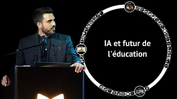

Conférence : Le Futur de l'Education face à l'Intelligence Artificielle | Idriss Aberkane
255k vues • il y a 10 jours
Conférence : Le Futur de l'Education face à l'Intelligence Artificielle | Idriss Aberkane
255k vues • il y a 10 jours

Les 10 plus grands Mathématicien de l'Histoire
800k vues • il y a 9 mois